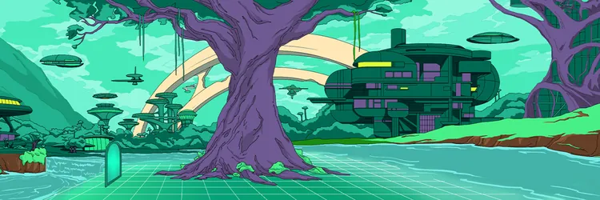

A gift for everyone who lives, works, gathers and passes through 4Seas in Chiang Mai. Take a slow road through the house, the days shared there, what has already been made together—and the blank pages that are yours to fill.ของขวัญสำหรับทุกคนที่อยู่ ทำงาน มาพบปะ หรือแวะผ่าน 4Seas ที่เชียงใหม่ เดินทางช้า ๆ ผ่านบ้าน วันเวลาที่ใช้ร่วมกัน สิ่งที่ได้สร้างด้วยกันแล้ว และหน้ากระดาษว่างที่รอให้คุณเติม送给在清迈 4Seas 生活、工作、相聚或路过的每一个人。慢慢走过这座房子、大家共度的日子、已经一起做成的事，还有留给你们来写的空白页。
Illustration · the solarpunk banner of the 4Seas doors

Illustration · the solarpunk banner of the 4Seas doors
01 THE HOUSE · บ้าน · 房子
A house with many doors.บ้านที่มีหลายประตู一座有许多扇门的房子。
In its own words, 4Seas is a cultural hub in Chiang Mai, rooted in Ethereum and part of the Zuzalu movement: a city homebase in Nimman for co-working and public gatherings, the Zuzalu Library for reading and learning together, and Mountain View for slower days close to nature.4Seas เล่าถึงตัวเองว่าเป็นศูนย์กลางทางวัฒนธรรมในเชียงใหม่ ที่มีรากจาก Ethereum และเป็นส่วนหนึ่งของขบวนการ Zuzalu มีบ้านหลักในเมืองย่านนิมมานสำหรับทำงานร่วมกันและการพบปะ มีห้องสมุด Zuzalu สำหรับอ่านและเรียนรู้ด้วยกัน และมี Mountain View สำหรับวันที่ช้าลงใกล้ธรรมชาติ用 4Seas 自己的话说，它是清迈的一个文化中心，扎根于以太坊，也是 Zuzalu 运动的一部分：宁曼路上有城市里的家，用来共同工作和公开聚会；Zuzalu 图书馆让大家一起阅读、一起学习；Mountain View（山景）留给更慢、更贴近自然的日子。
Illustration · the solarpunk banner of the 4Seas doors
02 THE DAYS · วันเวลา · 日子
Most gatherings begin with a resident.การพบปะส่วนใหญ่เริ่มจากคนที่อยู่ที่นี่大多数聚会，由住在这里的人发起。
Talks and workshops, yoga and meditation, tea in the backyard, screenings, game nights, questions that matter. 4Seas says most of its events are started by residents and friends, with the house helping each idea become real. Anyone with an idea can host one.มีทั้งการพูดคุยและเวิร์กช็อป โยคะและการทำสมาธิ ชาในสวนหลังบ้าน การฉายภาพยนตร์ คืนเล่นเกม และคำถามที่สำคัญ 4Seas บอกว่ากิจกรรมส่วนใหญ่เริ่มจากผู้พักอาศัยและเพื่อน ๆ โดยบ้านช่วยให้แต่ละไอเดียเกิดขึ้นจริง ใครมีไอเดียก็จัดกิจกรรมได้讲座和工作坊，瑜伽和冥想，后院里的茶，电影放映，游戏之夜，还有值得一问的问题。4Seas 说，大多数活动由住在这里的人和朋友们发起，这座房子帮助每个想法成真。有想法的人，都可以来办一场。
Illustration · the lakeside artwork of the 4Seas doors
04 YOUR PAGES · หน้าของคุณ · 你们的页面
Some pages are blank on purpose.บางหน้าตั้งใจเว้นว่างไว้有些页面，是特意留白的。
No single person can tell the story of a home. What grows here? What gets cooked, taught, mended, celebrated? Which photo would you choose? Send words, corrections, or a simple “please remove”—every empty frame waits for the community’s own voice.ไม่มีใครคนเดียวเล่าเรื่องของบ้านได้ทั้งหมด ที่นี่ปลูกอะไร ทำอาหารอะไร สอนอะไร ซ่อมอะไร ฉลองอะไร คุณอยากเลือกภาพไหน ส่งถ้อยคำ คำแก้ไข หรือแค่บอกว่า “ช่วยนำออก” ได้เลย ทุกกรอบที่ว่างอยู่รอเสียงของชุมชนเอง一个家的故事，不是一个人能讲完的。这里种什么？煮什么、教什么、修什么、庆祝什么？你会选哪一张照片？欢迎寄来文字、更正，或者一句“请撤下”。每一个空着的框，都在等社区自己的声音。
Illustration · the solarpunk banner of the 4Seas doors
05 THE GIFT · ของขวัญ · 礼物
Yours to keep, change, or give away.เป็นของคุณ จะเก็บ เปลี่ยน หรือส่งต่อก็ได้它属于你们：留下、改动，或再送出去。
This site, the archive and the tools behind them are open. Read them, fix them, fork them, carry them to another village. It is a handover, not a launch: the 4Seas community decides what stays, what changes and what comes down.เว็บไซต์นี้ คลังบันทึก และเครื่องมือเบื้องหลังเปิดทั้งหมด อ่าน แก้ไข แยกต่อ หรือนำไปให้หมู่บ้านอื่นได้ นี่คือการส่งมอบ ไม่ใช่การเปิดตัว ชุมชน 4Seas เป็นผู้ตัดสินว่าอะไรจะอยู่ อะไรจะเปลี่ยน และอะไรจะนำออก这个网站、这份存档和背后的工具都是开放的。阅读、修复、复刻，或带去另一个村子。这是一次交接，不是发布：留下什么、改动什么、撤下什么，由 4Seas 社区决定。
Illustration · the lakeside artwork of the 4Seas doors
01 / 06SCROLL · SWIPE · ↑ ↓
4SEAS, SLOWLY · อ่านช้า ๆ · 慢慢读
Stay awhile. Take what helps.อยู่ตรงนี้สักพัก แล้วนำสิ่งที่เป็นประโยชน์ไป停留片刻，用得上的尽管拿去。
No account, no tracking, no finish line. The same gift, in a quieter form—about the house and the people who make it home.ไม่ต้องมีบัญชี ไม่ติดตาม ไม่มีเส้นชัย ของขวัญชิ้นเดียวกันในรูปแบบที่สงบกว่า—เรื่องของบ้านและผู้คนที่ทำให้ที่นี่เป็นบ้าน无需账号，没有追踪，也没有终点。同一份礼物的安静版本——关于这座房子，和让它成为家的人们。
The name on the doorชื่อบนประตู门上的名字
四海为家
Read in Chinese, the four seas—四海, sìhǎi—once marked the edges of the known world, and so came to mean the whole world. 四海为家, sìhǎi wéi jiā, is to make the four seas your home: to be at home anywhere. The phrase first appears in the Records of the Grand Historian, where a chancellor argued for a grand palace; over the centuries it became a blessing for travelers. A house full of people from everywhere wears it well.ในภาษาจีน 四海 (ซื่อไห่) หรือ “สี่ทะเล” เคยหมายถึงขอบของโลกที่ผู้คนรู้จัก จึงกลายเป็นคำที่หมายถึงทั้งโลก 四海为家 คือการให้สี่ทะเลเป็นบ้าน อยู่ที่ไหนก็เป็นบ้าน วลีนี้ปรากฏครั้งแรกในบันทึกประวัติศาสตร์ “สื่อจี้” ตอนที่เสนาบดีคนหนึ่งเสนอให้สร้างพระราชวังใหญ่ เมื่อเวลาผ่านไปจึงกลายเป็นคำอวยพรของผู้เดินทาง บ้านที่มีผู้คนจากทุกที่มาอยู่รวมกันจึงเหมาะกับชื่อนี้“四海”原指古人所知世界的边缘，后来泛指天下。“四海为家”，就是走到哪里都是家。这句话最早见于《史记·高祖本纪》，是萧何劝说修建宫殿时所说；后来，它渐渐成了给远行人的祝福。一座住满来自各地的人的房子，正适合这个名字。
The houseบ้าน房子
01
4Seas Nimman4Seas นิมมาน4Seas 宁曼
The city homebase: co-working and public gatherings in one flow—what 4Seas calls a community living laboratory.บ้านหลักในเมือง: การทำงานร่วมกันและการพบปะอยู่ในที่เดียวกัน 4Seas เรียกที่นี่ว่าห้องทดลองการใช้ชีวิตของชุมชน城市里的家：共同工作与公开聚会融为一体，4Seas 称之为“社区生活实验室”。
02
Zuzalu Libraryห้องสมุด ZuzaluZuzalu 图书馆
More than a library: a place to read, discuss and learn from one another, where ideas from the Zuzalu movement keep growing.มากกว่าห้องสมุด: ที่สำหรับอ่าน พูดคุย และเรียนรู้จากกันและกัน ที่ซึ่งความคิดจากขบวนการ Zuzalu ยังคงเติบโต不只是一座图书馆：一个阅读、讨论、彼此学习的地方，Zuzalu 运动的想法在这里继续生长。
03
4Seas Mountain View4Seas Mountain View4Seas 山景
The nature retreat: longer stays, slower rhythms, focused work and shared life close to nature.บ้านใกล้ธรรมชาติ: อยู่ได้นานขึ้น จังหวะช้าลง ทำงานอย่างมีสมาธิ และใช้ชีวิตร่วมกันใกล้ชิดธรรมชาติ山间的家：住得久一点，节奏慢一点，专注工作，也一起过贴近自然的生活。
Also inside: co-working with quiet corners and meeting rooms, an event space, an exhibition space and a content studio. Summarized from 4seas.xyz, the community’s own home page—the place to check for anything official.ภายในยังมีพื้นที่ทำงานร่วมกันที่มีมุมเงียบและห้องประชุม พื้นที่จัดกิจกรรม พื้นที่จัดแสดง และสตูดิโอทำคอนเทนต์ สรุปจาก 4seas.xyz หน้าเว็บของชุมชนเอง ซึ่งเป็นที่สำหรับตรวจสอบข้อมูลทางการทั้งหมด里面还有：带安静角落和会议室的共同办公区、活动空间、展览空间和内容工作室。以上摘自社区自己的主页 4seas.xyz，一切正式信息请以那里为准。
Life togetherชีวิตที่ใช้ร่วมกัน一起生活
Knowledge shares and spontaneous meetups, most of them started by residents and friends. In one ordinary week of November 2026, the 4Seas calendar held things like:การแบ่งปันความรู้และการพบปะแบบไม่ได้วางแผน ส่วนใหญ่เริ่มจากผู้พักอาศัยและเพื่อน ๆ ในสัปดาห์ธรรมดาสัปดาห์หนึ่งของเดือนพฤศจิกายน 2026 ปฏิทินของ 4Seas มีกิจกรรมอย่างเช่น:知识分享和自发的聚会，大多由住在这里的人和朋友们发起。2026 年 11 月普通的一周里，4Seas 的日程上有这样一些活动：
Questions that matterคำถามที่สำคัญ值得一问的问题
AI meetupsพบปะคุยเรื่อง AIAI 聚会
Cypherpunk tea in the backyardชาไซเฟอร์พังก์ในสวนหลังบ้าน后院的密码朋克茶会
Hatha yoga & meditationหฐโยคะและการทำสมาธิ哈他瑜伽与冥想
Hands-on workshopsเวิร์กช็อปลงมือทำ动手工作坊
Game nightsคืนเล่นเกม游戏之夜
Screeningsฉายภาพยนตร์放映会
Exhibitionsนิทรรศการ展览
The calendar changes every week, so this is a snapshot, not a schedule. To see what is on—or to host something yourself—use the community’s own door: 4seas.xyz.ปฏิทินเปลี่ยนทุกสัปดาห์ นี่จึงเป็นภาพตัวอย่าง ไม่ใช่ตารางจริง หากอยากดูว่ามีอะไรบ้าง หรืออยากจัดกิจกรรมเอง ไปที่ประตูของชุมชนเอง: 4seas.xyz日程每周都在变，这里只是一个片段，不是时间表。想看最近有什么，或者自己办一场活动，请走社区自己的门：4seas.xyz。
The season rememberedฤดูกาลที่ถูกจดจำ被记住的那一季
ETHChiangmai × 4Seas, 8 December 2025 – 3 February 2026: two months of the Ethereum community in Chiang Mai. Among the recordings that were kept:ETHChiangmai × 4Seas วันที่ 8 ธันวาคม 2025 – 3 กุมภาพันธ์ 2026: สองเดือนของชุมชน Ethereum ในเชียงใหม่ ส่วนหนึ่งของบันทึกที่เก็บไว้:ETHChiangmai × 4Seas，2025 年 12 月 8 日至 2026 年 2 月 3 日：以太坊社区在清迈的两个月。保存下来的录音里有：
Opening ceremoniesพิธีเปิด开幕仪式
togETHer Tuesdays, a shared Zuzalu traditiontogETHer Tuesday ประเพณีร่วมของ ZuzalutogETHer Tuesday，Zuzalu 共有的一项传统
A Mandarin blockchain courseคอร์สบล็อกเชนภาษาจีนกลาง中文区块链课程
A community-organized intro to cryptocurrencyคอร์สแนะนำคริปโตที่ชุมชนจัดเอง社区自发组织的加密货币入门课
Web3 and the fair trade movementWeb3 กับการค้าที่เป็นธรรมWeb3 与公平贸易运动
A longevity & biohacking meetupพบปะเรื่องอายุยืนและไบโอแฮกกิ้ง长寿与生物黑客聚会
Lunch and after-hours jamsแจมดนตรีช่วงพักกลางวันและหลังเลิกงาน午间与深夜的即兴合奏
Sunday improvisations of gratitude for 4Seas hospitalityด้นสดวันอาทิตย์ ขอบคุณการต้อนรับของ 4Seas周日即兴，感谢 4Seas 的款待
Hackathon workshops at Chiang Mai Universityเวิร์กช็อปแฮกกาธอนที่มหาวิทยาลัยเชียงใหม่清迈大学的黑客松工作坊
Blank pages for the communityหน้าว่างสำหรับชุมชน留给社区的空白页
These frames are empty on purpose. Nothing here will be filled in for you or invented on your behalf. Send what you would like the world to see—only what you are happy to share, and only with the yes of anyone in it.กรอบเหล่านี้ตั้งใจเว้นว่างไว้ จะไม่มีใครเติมแทนคุณหรือแต่งเรื่องขึ้นเอง ส่งสิ่งที่คุณอยากให้โลกเห็นได้—เฉพาะสิ่งที่คุณยินดีแบ่งปัน และต้องได้รับความยินยอมจากทุกคนที่อยู่ในนั้น这些框是特意空着的。没有人会替你们填写，也不会替你们编造。寄来你们想让世界看到的——只寄你们乐意分享的，并且要得到其中每个人的同意。
What grows hereที่นี่ปลูกอะไร这里生长着什么
Gardens, kitchens, skills, projects—what does the house grow?สวน ครัว ทักษะ โปรเจกต์—บ้านนี้ปลูกอะไรขึ้นมาบ้าง菜园、厨房、手艺、项目——这座房子种出了什么？
Waiting for the community · รอชุมชนอยู่ · 等社区来写
Gatherings, in your wordsการพบปะ ในคำพูดของคุณ聚会，用你们的话来说
Which traditions matter most to the people who live here?ประเพณีไหนสำคัญที่สุดสำหรับคนที่อยู่ที่นี่对住在这里的人来说，哪些传统最重要？
Waiting for the community · รอชุมชนอยู่ · 等社区来写
A photo you chooseภาพที่คุณเลือก你们选的一张照片
One picture the community picks—shared with the yes of everyone in it.ภาพหนึ่งภาพที่ชุมชนเลือก—แบ่งปันเมื่อทุกคนในภาพยินยอม由社区选出的一张照片——得到照片里每个人的同意后再分享。
Waiting for the community · รอชุมชนอยู่ · 等社区来写
Who keeps the houseใครดูแลบ้านนี้谁在照看这座房子
Names and roles appear only if each person says yes. Until then: the people of 4Seas.จะมีชื่อและบทบาทก็ต่อเมื่อแต่ละคนยินยอม จนกว่าจะถึงตอนนั้น: ผู้คนของ 4Seas只有本人同意，才会写上名字和角色。在那之前：4Seas 的人们。
Waiting for the community · รอชุมชนอยู่ · 等社区来写
A welcome for newcomersคำต้อนรับสำหรับคนมาใหม่给新来的人一句欢迎
What should someone know on their first day at 4Seas?คนที่มาวันแรกควรรู้อะไรเกี่ยวกับ 4Seas一个人第一次来 4Seas，应该知道些什么？
Waiting for the community · รอชุมชนอยู่ · 等社区来写
Wishes for the next seasonความหวังสำหรับฤดูกาลหน้า对下一季的心愿
What would the house like to build together next?บ้านนี้อยากสร้างอะไรด้วยกันต่อไป这座房子接下来想一起做些什么？
Or simply tell anyone who looks after these pages, in person. Corrections are as welcome as new words.หรือบอกคนที่ดูแลหน้าเหล่านี้ด้วยตัวเองก็ได้ คำแก้ไขก็ยินดีต้อนรับเหมือนถ้อยคำใหม่也可以当面告诉照看这些页面的人。更正和新的文字一样受欢迎。
Open tools for any villageเครื่องมือเปิดสำหรับทุกหมู่บ้าน给任何村子的开放工具
The archive behind the Pit was made in five plain moves. Any community can repeat them for its own recordings.คลังบันทึกเบื้องหลัง PIT ทำขึ้นด้วยห้าขั้นตอนง่าย ๆ ชุมชนไหนก็ทำซ้ำกับบันทึกของตัวเองได้PIT 背后的存档，是用五个简单的步骤做成的。任何社区都可以用自己的录音再做一遍。
1Crawl—map where the recordings live.รวบรวม—สำรวจว่าบันทึกอยู่ที่ไหน采集——找到录音都在哪里。
2Harvest—pull them down, turn big videos into listenable audio.ดึงข้อมูล—ดาวน์โหลดและแปลงวิดีโอใหญ่เป็นเสียงที่ฟังได้收割——把录音取回来，大视频转成能听的音频。
3Audit—check every file, be honest about the rough ones.ตรวจสอบ—เช็กทุกไฟล์ และบอกตรง ๆ ว่าอันไหนยังหยาบ核对——每个文件都过一遍，粗糙的也照实说。
4Publish—a permanent public home, a static site, no accounts, no tracking.เผยแพร่—บ้านสาธารณะถาวร เว็บแบบสถิต ไม่มีบัญชี ไม่ติดตาม发布——永久的公共家园，静态网站，无需账号，不追踪。
5Give it back—hand it to the community. CC0.มอบคืน—ส่งให้ชุมชน CC0送还——交给社区。CC0。